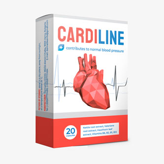

Hipertensija var neizrādīt sevi gadiem ilgi. Paaugstinātu asinsspiedienu noraksta uz nogurumu,
laikapstākļiem vai organisma īpatnību. Kad parādās galvas sāpes, bezmiegs vai apgrūtināta elpošana, tad
pēdējā kārtā domā par problēmām ar sirdi. "Ar mani viss kārtībā, vienkārši karsts ārā", – teica mana mamma,
kad viņai parādījās aizdusa.
Man bail atcerēties to dienu, kad es varēju zaudēt viņu... Apmēram 2 mēnešus pirms sirdslēkmes
viņa sāka ātri nogurt un sūdzēties par galvassāpēm. Ar visu to spiediens nebija augsts – 135/90. Lēkmes
dienā mamma jutās normāli un devās uz veikalu. Vēlāk man piezvanīja no slimnīcas un teica, ka viņa ir
reanimācijā. Viss bija kārtībā.
Atveseļošanās bija ļoti ilga, un lēkme varēja atkārtoties jebkurā brīdī. Spiediens joprojām
bija 150/95. No liela tablešu daudzuma atnāca sliktas analīzes, ka draudēja ar nieru mazspējas attīstību.
Steidzami nepieciešams samazināt katru dienu patērētās tabletes. Bet kā? Jo bez tām stāvoklis uzreiz
pasliktinās.

Mēs vērsāmies pēc palīdzības pie European Society of Cardiology. Kardiologs Vinsents Čepmens
paskaidroja, ka strauji atcelt nozīmētos preparātus nedrīkst. Nepieciešams attīrīt asinsvadus un izraisīt
to tonusu. Un tikai tad pakāpeniski samazināt zāļu devu. Asinsvadu tīrīšanai un stiprināšanai viņš
izrakstīja Cardiline.
Mamma izdzēra kursu un sāka justies daudz labāk. Sāku mosties moža, nevis ar galvassāpēm.
Pārgāja sāpes krūtīs, elpas trūkums un nogurums. Kopējais stāvoklis uzlabojās, un analīzes uzrādīja
normālu holesterīna līmeni. Pakāpeniski viņas ārsts samazināja zāļu devu. Pēc pusgada pēc kardiologa mamma
izdzēra vēl vienu kursu ar Cardiline.